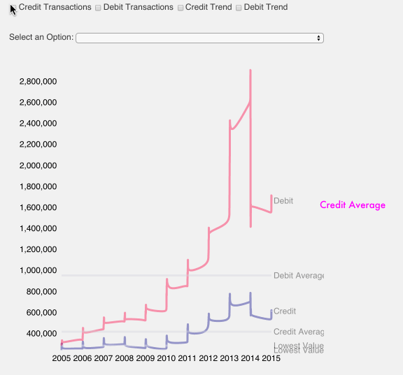

How the Introduction of Contactless Payment Affects How People Buy Their Bus Tickets?
Trends to be found in the data
1.How do people pay for their bus journeys?
2.On average, how much money is being spent on a transaction?
3.How did the introduction of contactless payment method on UK bus networks affect the situation of credit and debit card payments?
One Out of 233 Bus Journeys Is a Contactless One
In 2013, the UK Card Association supported TFL and the London public in 7,700,000 contactless bus journeys. This is still fairly low if one considers the sheer amount of journeys the local bus network in London carries. According to TFL the network makes over 1.8 billion passenger journeys possible per year. On average, this makes every 233rd bus journey a contactless one.
In Addition...
- In March 2014, the number of debit and card payments for bus journeys reached almost 3 million. Then only five months later the amount of transactions dropped to by almost 50 percent. Was this due to the introduction of the contactless payment option and the abolishment of cash payments on buses?
- According to TFL, bus travellers who pay cash were paying more than others previously to the abolishment of cash payments on buses. Cash fares cost £2.40 back then. Now with the contactless payment option, the 95p for the cash payments can be saved via the use of the Oyster card or a contactless payment card option such as MBNA's low rate credit card.
- In August of 2014, we have seen a peak for the average value spent on each transaction. With 55£ for credit card payments and 31£ for debit card payments in August 2014, there was a significant increase.
- Both, the average transaction value for debit and credit card payments seemed to have slowd down over the past years. Both did also experience a sharp drop in the beginning of 2014, and a suprised with a peak a few months for credit and debit transactions of 15£ and 20£ respectively.
Overview Retail Industries and Debit Card Transactions
Other retail industries have seen a significant change how much value is being spent via credit or debit cards too.
To find out how other industries have changed since 2012, you can click here and play around with the interactive visualisaton.